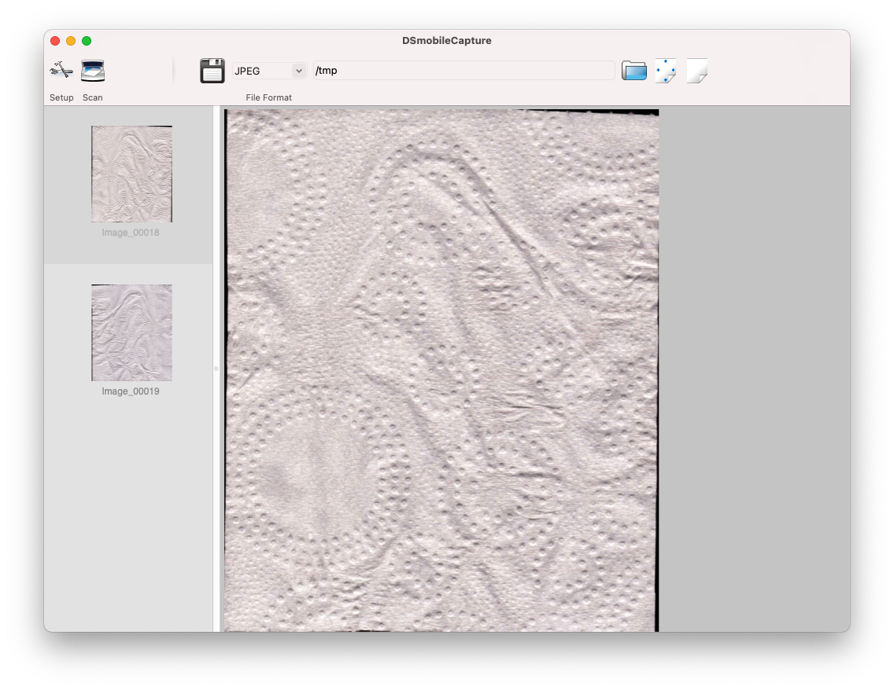

在 macOS 下科学地使用 Brother DS-720D 便携式扫描仪
Contents
背景
本文开坑于 2019 年 8 月。🐦了两年半。
2018 年年底，因为特别心水能自动把纸吃进去的结构，在 ebay 上以低廉的价钱拍了一台二手 Brother DS-620D。收到货一看，卖的这么便宜果然有问题，货不对板啊，实际上给我寄过来的居然是一台更高级的 DS-720D。怎么办呢？当然是开心地收下了。
这台便携扫描仪长这样：
它能够将送到嘴边的纸张自动吃进去拉出来并顺便生成双面彩色图像。由于对纸张长度几乎没有限制，十分适合扫描购物小票等长条形文档。
该型号现已停产，但同系列仍有新款在售产品。本文的精神可能也适用于这些产品。
驱动和配套软件安装
在 Brother 的网站上很容易找到相关软件：https://www.brother.com/support/ds-720d/downloads。安装完后会得到内核扩展一枚和叫作 DSmobileCapture 的小软件。我们掏出一张尚未使用的厕纸，揉一揉，塞进去，实施彩色扫描，得到如下画面：

问题
看起来这个东西就好用了，但还是有些问题。
这个 DSmobileCapture 似乎是 macOS 上唯一能够调用该扫描仪的软件。系统自带的 Image Capture 和常见扫描软件完全不显示该扫描仪。这使得它很难被集成到我们的工作流当中。
这个软件还有一些不符合我使用习惯的设计。其流程为连续扫描多张文件设计，如果您只需要扫描单张，则在扫描完成后需要点击取消以停止继续扫描。同时无论您需要扫描几张，必须先将第一张纸喂进去才能点击开始。
尝试：用 Raspberry Pi 将扫描仪转换到标准协议
一个简单的思路是，既然该扫描仪提供了 linux 驱动，我们可以将其接在一台 Raspberry Pi 上，提供标准的网络扫描仪协议，便可在 macOS 上编程控制。
系统都刷好了，我突然意识到所谓的 linux 驱动并没有 ARM 版本，Raspberry Pi 无法使用。也没有代码可以自行编译。
当然理论上我们还是可以安排一台 x86 机器或虚拟机干这个事情，但是我不喜欢这么做。
尝试：TWAIN 协议
观察驱动安装产生的文件，我们可以从多个地方观察到 TWAIN 这个词。比如：
/Library/Image Capture/TWAIN Data Sources/DS-720.ds的路径/Applications/DSmobileCapture.app/Contents/MacOS/AvCaptureTool_lng.plist的内容/Applications/DSmobileCapture.app/Contents/MacOS/DSmobileCapture的符号们
那么 TWAIN 是什么呢？搜索得知是某通用扫描仪协议。据说 macOS 从某版本起偷偷去掉了相关支持，所以大家都找不到这个设备了。
诶那没支持了 DSmobileCapture 是怎么工作的呢？通过观察和学习，我们攒出了如下代码，其中 twain.h 可从其寒酸的官网取得。
|
|
编译，运行：
|
|
扫出东西来了耶！
不过还是有一些小问题：
- 这个东西不支持调各种参数或多台扫描设备（多花点时间可以解决）
- 这个东西是用了 deprecated Carbon API，说不定哪天就没了。但是驱动那头用了有关 API 我们也没有办法。
还有一个大问题：这个东西居然还会出窗口！扫完了还要点取消！还是要先把纸放进去！程序控制流还会被这个窗口抢走！

原来之前我们在 DSmobileCapture 里看到的这个窗口不是它自己出的，而是 TWAIN Data Source 那头出的！
尝试：Wireshark 抓 USB
听说 Wireshark 可以抓 USB，于是试试看。
首先在较新的 macOS 下抓 USB 需要关闭 SIP。
抓完以后发现一大堆眯眯小的帧。看不懂。放弃。（然后把 SIP 开回来）
尝试：直接和驱动联系
既然 TWAIN Data Source 会出窗口，很难想象这是内核扩展的一部分，那么这个 Data Source 是个怎样的存在呢？我们能不能仿制一个呢？
容易发现有这样一个文件 /Library/Image Capture/TWAIN Data Sources/DS-720D.ds/DS-720D，file 告诉我们它看起来像是 dylib。观察发现它确实提供了 DS_Entry 函数。
随意观察几个函数，可以发现很多地方都用到了 printDebugLog 打印了一些有用的信息，可是我们却什么都没有看到。猜测是 debug level 不够高。那么怎么调高呢？猜测可能来自环境变量，配置文件或是硬编码常量。
先尝试最简单的，在 /Library/Image Capture/TWAIN Data Sources/DS-720D.ds 里 grep -ir debug *，一下就发现了 Versions/A/avscan.plist 这个文件，进去把 DebugLevel 改成一个大数，即可看到调试信息。关键过程大概分几步
- InitializeDriver
- InitializeScanner
- StartScanJob
- GetADFStatus（检查是否有纸）
- SetScanParameter
- TuneScanLength
- SetGammaTable
- StartScan
- ReadScanEx
- StopScan
- EndScanJob
观察它们的实现，发现其实都是调用的 /Library/Image Capture/TWAIN Data Sources/DS-720D.ds/Resources/DS-720D.dylib 里面的接口。那么事情就简单了，我们只要猜对接口定义，依葫芦画瓢进行同样的调用即可。
其中最复杂的问题是 SetScanParameter 涉及到一个巨大的结构体，猜起来比较困难，但是好在这个 dylib 也提供了翔实的调试信息，只需 mkdir -p /tmp/DrvLog && echo "DebugLevel 1000" > /tmp/DrvLog/Debug.conf 即可在 /tmp/DrvLog 中看到很多重要文件。
在这个结构体中还有一些数值意义不明，不过经过一番搜索，GitHub 上似乎有一个用了同样结构体的项目。尽管它并没有给出结构体和枚举类型的定义，我们还是可以从枚举类型值的名称和相关注释窥见个中含义。
最后，我们猜出了相关函数、结构体和枚举类型的大致定义。其中有六个字节和部分枚举值猜不出来，但既然没有观察到它们被使用，那也无伤大雅。
|
|
然后依次调用相关函数就可以开心的扫描啦。讨厌的窗口也不见啦。
SetScanParameter, TuneScanLength, StartScanJob, EndScanJob 不调用似乎也没事。TerminateDriver 不调用可能出现 Segmentation Fault。
最后我们会通过 ReadScanEx 得到一坨数据。并没有什么文件头看不出类型。用十六进制编辑器查看可以观察到其中数据有一定重复性，那么猜测是裸像素点。试着转换一下，成功：
|
|
Author SEIAROTg
LastMod 2022-01-09